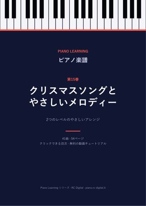
第15巻クリスマスソングとやさしいメロディー41曲 · 54ページ€3.99購入する
Piano Learning · PDF
564 曲 · 1933 ページの楽譜 · 14 巻 · 10 言語
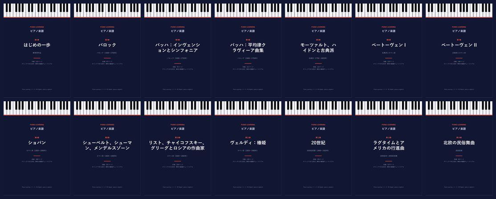
全14巻：564曲、楽譜1933ページ。
€55.86€19.99−64%

第15巻クリスマスソングとやさしいメロディー41曲 · 54ページ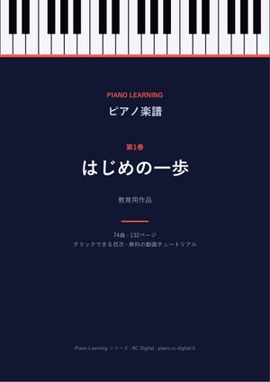
第1巻はじめの一歩74曲 · 132ページ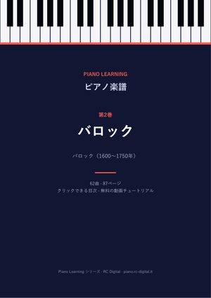
第2巻バロック62曲 · 87ページ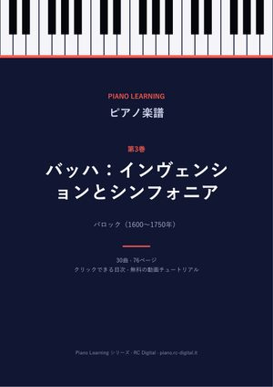
第3巻バッハ：インヴェンションとシンフォニア30曲 · 76ページ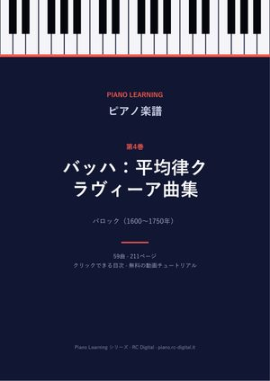
第4巻バッハ：平均律クラヴィーア曲集59曲 · 211ページ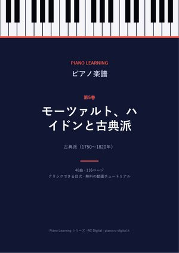
第5巻モーツァルト、ハイドンと古典派40曲 · 116ページ 第6巻ベートーヴェン I18曲 · 125ページ
第6巻ベートーヴェン I18曲 · 125ページ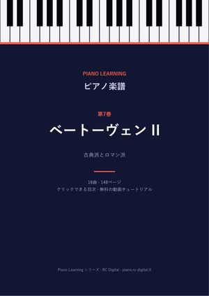
第7巻ベートーヴェン II18曲 · 148ページ 第8巻ショパン46曲 · 186ページ
第8巻ショパン46曲 · 186ページ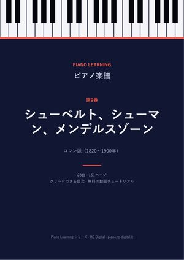
第9巻シューベルト、シューマン、メンデルスゾーン28曲 · 151ページ 第10巻リスト、チャイコフスキー、グリーグとロシアの作曲家37曲 · 230ページ
第10巻リスト、チャイコフスキー、グリーグとロシアの作曲家37曲 · 230ページ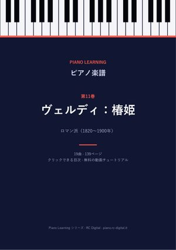
第11巻ヴェルディ：椿姫19曲 · 139ページ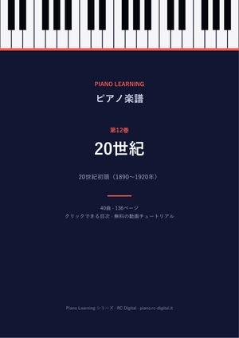
第12巻20世紀40曲 · 136ページ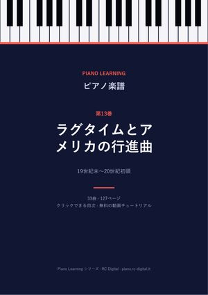
第13巻ラグタイムとアメリカの行進曲33曲 · 127ページ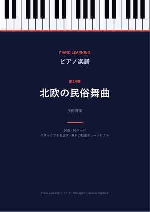
第14巻北欧の民俗舞曲60曲 · 69ページ目次の曲名をタップすれば、そのページへ移動します。しおりも付いています。
いま弾いている曲を書いたのはどんな人か、数行でわかります。
楽譜から、ノーツが落ちてくる動画へ。チュートリアルのある曲すべてにリンク付き。
一度の購入で、お好きな言語の版をダウンロードできます。
シリーズ収録の4曲の1ページ目です。ページをタップするとその曲のページが開きます。
PDF です。パソコン、タブレット、スマートフォンで開けて、印刷もできます。各巻は、クリックできる目次としおりの付いた1つのファイルです。
どの商品にも10言語の版が含まれます：イタリア語、英語、ドイツ語、スペイン語、フランス語、ポルトガル語、ロシア語、中国語、日本語、韓国語。お好きな版をダウンロードしてください。
お支払い後すぐにダウンロードページが開き、リンクの入ったメールも届きます。各巻は PDF 1つ、全巻セットは言語ごとに ZIP ファイル1つ（PDF 14個入り、約 50 MB）です。
はい。自由な版（パブリックドメインまたは Creative Commons）なので、このサイトの各曲のページに無料のリンクがあります。シリーズでは、すべてを作曲家と時代ごとに整理し、目次、作曲家の紹介、チュートリアルへのリンク、各版のクレジットを付けています。
いいえ。第15巻「クリスマスソングとやさしいメロディー」は別売りで €3.99 です。全巻セットは第1巻から第14巻までです。
Payhip による安全な決済で、購入後すぐにメールでダウンロードできます。楽譜は自由な版（パブリックドメインまたは Creative Commons）で、このサイトの各曲のページでも1曲ずつ無料で入手できます。ここではすべてを1つのファイルに整理し、各版のクレジットも掲載しています。